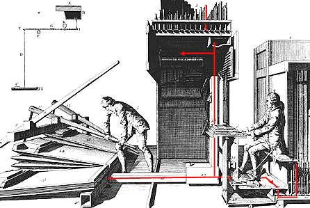
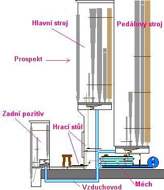
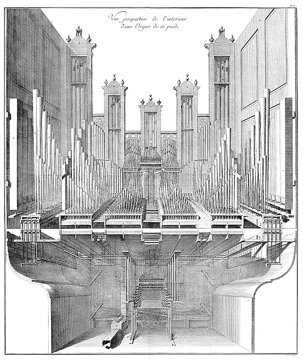
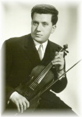

Varhany v sobě spojují dva základní "principy":
Tato rozsáhlá část varhanních stránek se zabývá především druhou - technickou stránkou nástroje, tedy stavbou a uspořádáním varhan, konstrukcí a principem jednotlivých používaných elementů. Je rozdělena na osm částí (podle základních součástí nástroje) a doplněna o několik rozšiřujících kapitol z oblasti varhanářství a varhan obecně. |

Princip varhan a jejich komponentů je vysvětlen na celé řadě ilustrací, fotografií a animací (vyžaduje FlashPlayer) a textů. Anatomie varhan ® navazuje na Varhanní slovník (rozšířené vysvětlení hesel slovníku). Poznámka:
Popis principu funkce jednotlivých komponentů a funkčních uzlů se zde
odvíjí spíše v obecné či zevšeobecňující rovině, nezabývá se většinou
konkrétními konstrukčními řešeními. Animace jsou pro názornost zjednodušeny
(nejsou dodržena měřítka a jsou vypuštěny ty části, které nejsou pro pochopení
funkce příslušné součásti nezbytné, pohyb je zpomalen v čase). I při použití
téhož principu lze k řešení určité funkce nástroje dojít mnoha konstrukčními
cestami, z nichž mnohé jsou chráněny rozličnými patenty a průmyslovými
vzory. Vybrány jsou proto vždy jen ty řešení, na kterých lze danou funkci
či princip vysvětlit nejnázorněji (funkce páky, hřídele, potrubí atd.
je vždy shodná a nezávislá na tom, zda jsou vyrobeny ze dřeva, kovu či
plastu apod.). V žádném případě nechápejte tyto stránky jako vyčerpávající
popis či návod, na základě kterého lze sestrojit varhany. |
| Stránky anatomie varhan: |
|
|
 |
|
Poznámka: vzhledem k rozsahu problematiky jsou stránky přidávány na web průběžně. Funkční (už hotové či rozpracované) části anatomie jsou ve výše uvedeném seznamu zařazeny jako odkaz na příslušnou stránku, zbytek je zatím "ve výstavbě". Poslední úpravy 11.9.2009 |

Věnováno památce mého otce
Václava Bernata, hudebníka tělem
i duší ... a mého syna Vojtěcha , *13. - †16. února 2007 |
 |
© 2003 - 2009 Ing. Petr BERNAT Všechna práva autorů vyhrazena. Bez svolení autora stránek lze všechny texty, obrázky a animace použít jen pro osobní potřebu nebo v rámci zákonné licence pro výukové účely. Anatomie varhan je vytvořena z části na základě obrázků, animací a textů převzatých z polských stránek ORGANY PISZCALKOWE Konrada Zacharského, s jehož svolením jsem texty a popisy v obrázcích a animacích přeložil do češtiny. Na jeho materiálech je uvedena zpravidla značka "Kokon". Mé animace a obrázky mají značku BRT. U všech dalších převzatých materiálů je uveden důsledně původní zdroj (v popisu ALT k obrázku nebo na obrázku či na konci strany) případně i odkaz na zdrojové www. Nejčastěji jsou použity obrázky z katalogu firmy Aug. Laukhuff GmbH & Co , firmy Organ Supply Industries ze stránek varhanářů Svena Hjortha Andersena a ORGAN SERVICE Roháč - Juráň. Hudba na pozadí této stránky: Improvizovaná toccata na duchovní píseň "Co již dávní proroci", Petr Strakoš, varhany Rieger v Dubicku. |